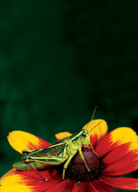
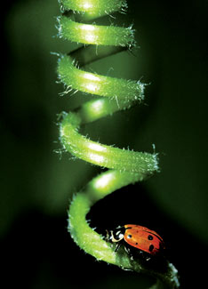
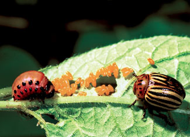
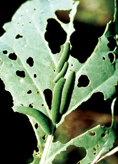
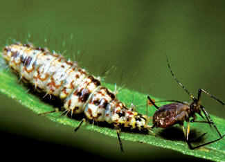
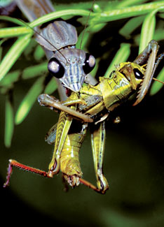
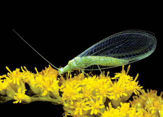
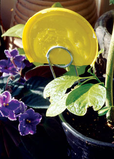

Sharp-eyed handpicking and trapping can control many garden pests, but not every insect battle can be won with hand-to-hand combat. Instead, you may need an intervention plan that affects the pest, yet causes little or no harm to natural predators and beneficial life-forms that live in your garden. This is where organic pest control products can come to the rescue. To help you match the best products with each pest, we’ve organized our guide in two ways - by pest and by remedy. Read through the Organic Remedies for Garden Pests table and then bring yourself up to date on cures with “Top 11 Organic Pest Control Products” on the next few pages. The information in the table and the text is based on current recommendations from sustainable agricultural research centers throughout North America.
In the last few years, much has been learned about the secret world of garden insects. Spraying is not your only option. Growing flowers to provide nectar and pollen for beneficial insects, and excluding pests with row covers are both remarkably effective preventive measures. You can learn more about these two options by searching for “beneficial insects” and “row covers” on our Web site. And don’t forget our feathered friends - wild birds, ducks and chickens feast on all kinds of garden pests (see “Poultry Pest Patrol”).
Before you decide to use any organic pest control product, take the time to correctly identify the pest (see “What’s Buggin’ You?” below) and see if it will respond to cultural controls, such as simple handpicking. (Using the wrong product could cost you time and money, and may backfire by killing natural predators.)
The Basic Biologicals. The oldest and best known of biological pesticides is Bt (Bacillus thuringiensis ssp. kurstaki), which remains a top remedy for leaf-eating caterpillars. Bt is based on a naturally occurring soil bacterium that causes the insect’s gut to rupture several hours after it eats it. A newer biological pesticide called spinosad is a fermented brew of two naturally occurring bacteria, and it slowly paralyzes insects after they eat it. Spinosad is widely used in fire ant baits, and it is also useful for controlling leaf-eating beetles, such as Mexican bean beetles and Colorado potato beetles. Where cabbageworms, armyworms, European corn borers or other caterpillars require repeated treatment, experts recommend alternating Bt with spinosad to keep insects from becoming resistant.
Itchy Irritants. Although diatomaceous earth feels as soft as talcum powder in your hand, under a microscope you would see that each particle has sharp edges. When enough gets wedged into the head and leg joints of soft-bodied insects, they dry up and die. Diatomaceous earth deters slug feeding, too. The effects are short-lived because it seeps into mulch and soil after rain, but a thorough, well-timed dusting can still give good control of aphids, leafhoppers, and slugs or snails. In contrast, the particles of kaolin clay are so tiny that they form a thin paint when mixed with water. Leaves covered with the stuff are ignored by many common pests, and those that do nibble on clay-coated leaves usually move on. Organically grown produce that has traces of a dusty off-white residue was probably treated with kaolin clay.
Soaps and Oils. Aphids, mites and other small sucking insects that don’t have much of an exoskeleton (shell) often can be controlled with two applications of insecticidal soap, five to seven days apart. Assuming you get the soap on the insects (which is crucial), its fatty acids cause the bugs to die through desiccation. For best results, blast infested plants with a strong spray of water to dislodge offenders, then apply insecticidal soap to kill any missed by the water spray. (Once tiny sucking insects are washed to the ground, few make it back up to tender new growing tips.) Use the soap sparingly, as it can reduce yields of some crops. And know that plant leaves can be damaged if you apply insecticidal soap on a hot, sunny day.
Oils that clog up insects’ sensory and breathing systems can be useful in the control of whiteflies and a few other pests. Most horticultural oils are now made from soybean oil, made into a water-soluble emulsion. (These oils may burn plant leaves in hot weather.)
If you’re going to go the oil route, in most cases it is best to opt for neem oil, which is derived from the tropical neem tree. After dozens of studies, neem has not turned out to be the big fix for garden pests it was hoped to be, yet it has earned recognition for control of squash bugs, Mexican bean beetles and a few other hard-to-control bad boys. In addition to the smothering action of neem oil, contact with or ingestion of neem’s active ingredient slows feeding and radically reduces reproduction. Neem seldom eliminates pests altogether, but it often reduces them to levels that can be ignored or managed by handpicking.
Employing Natural Enemies. If you’re willing to pay close attention to details of timing, temperature and moisture, you can do some amazing things with microscopic life-forms, like wipe out every cutworm in a newly dug bed with beneficial nematodes. Some people have even had luck injecting these tiny parasitic eelworms into the stems of squash plants infested with squash vine borers, and Japanese beetle grubs make fine hosts for nematodes, too.
Where grasshoppers are the biggest problem, the farmscaping approach that works best is to maintain a moist, grassy area away from your garden, and encourage grasshoppers to congregate there by mowing around it. In early spring, just as grasshoppers begin to emerge, place baits that contain the spores of Nosema locustae in and around the grasshopper habitat. Young grasshoppers that eat the bait will grow weak and die. Underground, milky spore disease, applied in fall or early spring, does a similar number on Japanese beetle larvae.
The new kid on the microbial block is Beauveria bassiana fungus, the spores of which germinate and grow on whiteflies, thrips and several other pests, turning them into white mummies. It’s a useful tactic, but may result in unwanted casualties of ladybeetles and other susceptible insects.
To locate mail-order sources for these products and compare prices, use our new Pest Control and Gardening Products Finder.
Chickens, ducks, guineas and turkeys are key players on modern homesteads. We are collecting reports on how poultry help reduce pest problems, and thus far you’ve told us that the following pests can be reduced by poultry: ticks, mosquitoes, flies, grasshoppers, Japanese beetles, fire ants, termites, pill bugs, grubs, crickets, cabbageworms and millipedes. We invite you to send us more reports on how poultry can help control yard and garden pests. We would also like to receive reports on whether your town or city allows backyard poultry. Send your reports to: Letters@MotherEarthNews.com or write to Poultry Pest Patrol; Mother Earth News; 1503 SW 42nd St.; Topeka, KS 66609. - Mother
Every vegetable gardener should have a copy of Whitney Cranshaw’s Garden Insects of North America (see Mother’s Bookshelf), which covers hundreds of bugs that inhabit home gardens. If you’d rather use the Internet, this new site has an up-to-date list of insect identification resources sorted by region. If you want to go straight to photos, the Plant Pest Identification Aid published by Texas A&M University has excellent photos organized into logical groups, or you can use the page’s search function to find your way. The Integrated Pest Management guides from Penn State are remarkably easy to use, too.
|
 DWIGHT KUHN One of the not so good bugs, a two-striped grasshopper. |
 DWIGHT KUHN A ladybeetle, one of the good guys. |
 DWIGHT KUHN Colorado potato beetle larva, eggs and adults. |
|
 DAVID CAVAGNARO Cabbage worms can make quick work of cabbage leaves. |
 DWIGHT KUHN Lace wing larvae prey on aphids and leafhoppers.
|
 DWIGHT KUHN Yikes! This praying mantis is clutching its prey, a garden-gobbling grasshopper. |
|
 DWIGHT KUHN Lacewings prey on aphids and leafhoppers. |
 WALTER CHANDOHA Yellow sticky traps can attract and immobilize some garden pests. |
|